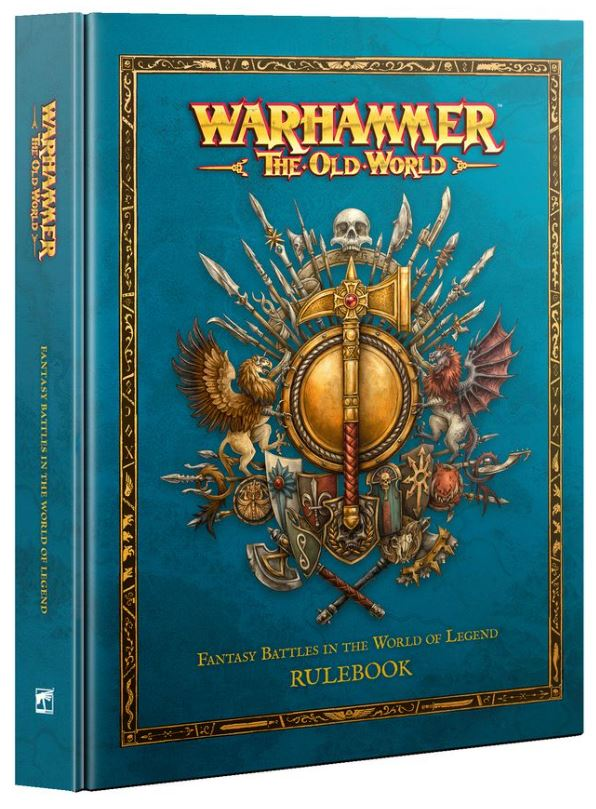

Las preventa de los Dogs of War para Warhammer: The Old World abrieron en los días posteriores al Warhammer World Open de septiembre y el lanzamiento en tiendas está previsto para noviembre de 2026. La caja de inicio incluye 42 miniaturas en plástico con los perfiles más icónicos de la facción: Duellistas de Estalian, Arbalesteros de Tilea, Ogros Mercenarios y el infaltable Paymaster — Mydas el Avaro — como personaje central del sistema económico del ejército. La calidad de los kits ha superado las expectativas de la comunidad.
El Arcane Journal de Dogs of War, incluido en la caja, implementa el doble sistema que la comunidad pedía: los mercenarios pueden jugarse como ejército independiente con reglas propias de facción completa, o como Regimientos de Renombre contratados por cualquier otro ejército de The Old World. Pirazzo y su Legión Perdida, Ricco y sus Guardias Republicanos y varios personajes mercenarios míticos del Warhammer Fantasy clásico tienen por fin sus miniaturas en plástico — algo que muchos veteranos llevan esperando desde los tiempos de la 6ª edición.
La noticia más emocionante del Warhammer World Open no fue solo los Dogs of War: en la presentación del evento, un representante de GW confirmó que habrá "noticias significativas sobre Kislev" antes de que acabe 2026. No es una fecha de lanzamiento, pero es la primera confirmación explícita de que el ejército más pedido por la comunidad desde el relanzamiento del juego está en la recta final de desarrollo. La comunidad interpreta "noticias significativas" como un reveal con box set propio, siguiendo el patrón de los Dogs of War.
The Old World cierra 2026 en el mejor estado de salud desde su relanzamiento en 2024. El Warriors of Chaos core set del verano trajo nuevos jugadores al juego, los Dogs of War satisfacen a la base veterana con contenido que llevaban décadas esperando, y si Kislev se confirma antes de diciembre el otoño de The Old World habrá sido el más activo de su historia. GW ha demostrado con este calendario que tiene un roadmap ambicioso y bien ejecutado para el sistema. La comunidad está más activa que nunca.